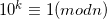

Problem 26 is another problem from Project Euler with a very cool solution. I suppose it can be solved by sheer brute-force, but it will take long and won't be elegant.
After some manual experimentation with long division on paper and then with a calculator it becomes clear that some things are very systematic here.
There are 3 kinds of rational numbers:
- Expansion is finite (for instance 1/4 = 0.25): those are numbers of the form
- Expansion is repetitive, from the start (like 1/7 = 0.(142857)). This is for numbers co-prime to 10.
- Expansion is repetitive, after some initial non-repetitive section. This is for numbers that have both factors co-prime to 10 and are divisible by 2 or 5. (for example 1/14 = 0.0(714285))
To find the longest cycle it's sufficient to look just at the primes - because other numbers will just have the same cycles after some initial non-repetitive section.
But how do you find the length of the cycle efficiently? This is where number theory comes in! This page contains a lot of very interesting information about this problem.
Eventually, it all boils down to the multiplicative order of the denominator.
We have to solve the discrete logarithm:

k is the cycle length for n, for numbers co-prime to 10. The discrete logarithm is a difficult problem, but fortunately the numbers we're dealing here are small.
It took my Python script about one-tenth of a second to find the answer using this method.